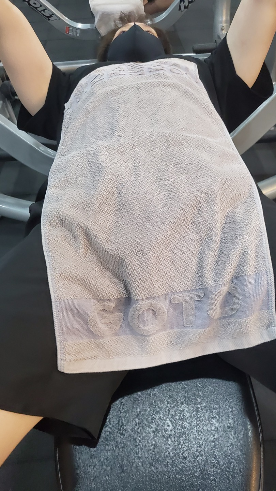

다양한헬스동작들
벤치프레스
랫풀다운
레그익스텐션
인클라인벤치프레스
라잉레그컬
이두운동
???????
벤치프레스

벤치 프레스(bench press, chest press)는 스쿼트,
데드리프트와 함께 웨이트 트레이닝의 'Big 3'로 불리는 대표적인 근력 운동 중 하나이다.
벤치에 등을 대고 누워서 역기를 가슴 높이까지 내렸다가 굽힌 팔꿈치를 쭉 펴면서 들어 올리는 방식으로 실시한다.